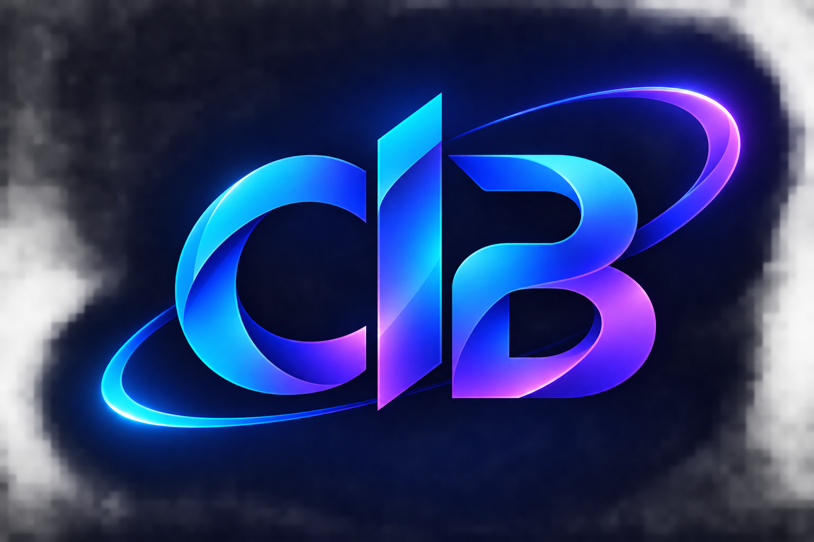

Education
Studying Software Engineering at Arba Minch University, with an interest in programming, software design, and practical problem-solving.

WELCOME TO MY PORTFOLIO
I’m a third-year Software Engineering student at Arba Minch University. I enjoy learning how software works and building useful digital solutions, with a focus on full-stack development.
01 / ABOUT
I am Bethel Bantidagn, a third-year Software Engineering student at Arba Minch University. I enjoy understanding how software works and building useful digital solutions. My current technical skills include Java, HTML, CSS, and JavaScript. I am interested in full-stack development and continuously improving my programming and problem-solving skills through practical projects.
Studying Software Engineering at Arba Minch University, with an interest in programming, software design, and practical problem-solving.
Intermediate Java, alongside HTML, CSS, JavaScript, Git, and GitHub. I continue to strengthen these skills through coursework and personal projects.
Building practical software projects and preparing for software engineering internships, remote work, and freelance opportunities, with an interest in full-stack development.
02 / SELECTED WORK
A showcase of applications and projects developed through practice, coursework, and continued learning.
03 / GET IN TOUCH
I welcome opportunities to discuss software projects, internships, and collaboration with other developers.